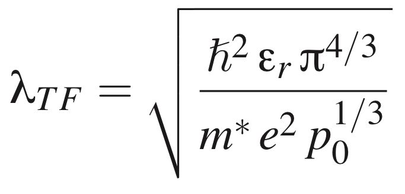

Created by Luca De Vico
The relationship between Thomas-Fermi length (λTF) and charge carrier density (p0 in case of p-type semiconductor) is regulated by:
where ℏ is the reduced Planck's constant, εr = ε0ε1, m* is the effective charge carrier mass, and e the elementary charge. In case of a n-type semiconductor one uses n0. The effective mass of the charge carrier (hole or electron) is commonly expressed as a fraction of the mass of an electron at rest. Typical values of m* are reported in Table 1.
Go back to the BIOFET-SIM Web Interface
| Semiconductor type | m* | ε1 | Ref. |
|---|---|---|---|
| Silicon n-type | 0.98 | 12.0 | (1) |
| Silicon p-type | 0.54 | 12.0 | (1) |
| Indium oxide intrinsic n-type | 0.35 | 9.0 | (2) |
| Indium Arsenide in inversion layer n-type | 0.026 | 20.0 | (1) |
| (1) Yacobi, B. G. Semiconductors Materials An Introduction to Basic Principles; Microdevices; Kluver Academic Publisher, New York, 2003; p 54 | |||
| (2) Kostlin, H.; Jost, R.; Lems, W. Phys. Status Solidi A 1975, 29, 87-93 | |||
(Please report errors to "luca _at_ kemi.ku.dk".)
The BioFET method is developed by the
Jensen
Research Group
Department of Chemistry
University of Copenhagen
Please cite these references in publications:
De Vico, L.; Sørensen, M. H.; Iversen, L.; Rogers, D. M.; Sørensen, B. S.; Brandbyge, M.; Nygård, J.; Martinez, K. L.; Jensen, J. H. "Quantifying signal changes in nano-wire based biosensors" Nanoscale, DOI:10.1039/C0NR00442A.
Reprints can be obtained by contacting Jan Jensen.